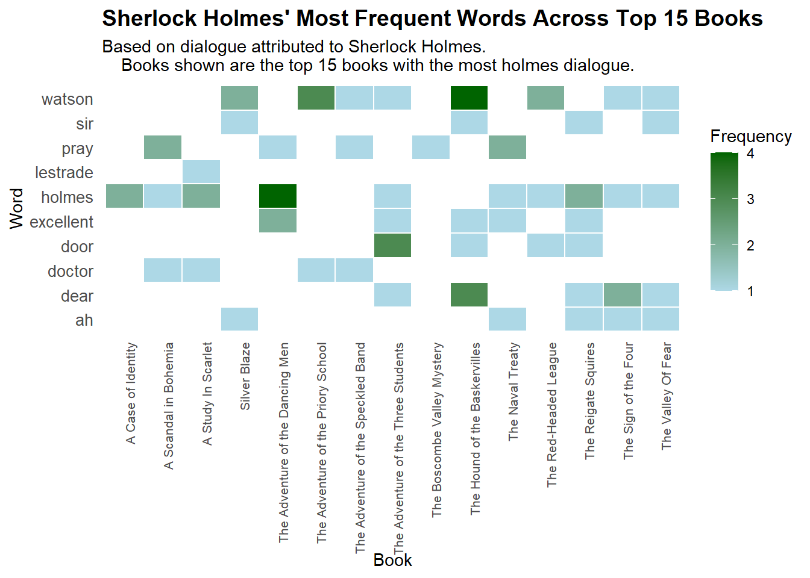
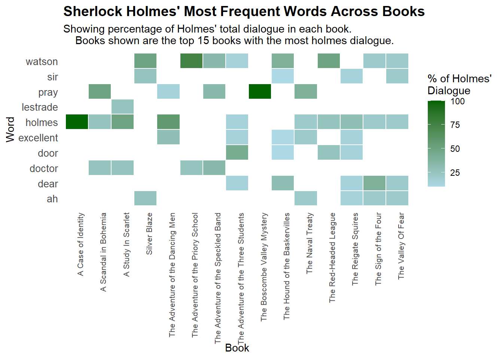

library(tidyverse)
library(here)
library(tidytext)
library(wordcloud2)
library(stringr)
library(ggplot2)Tidy Tuesday Week 13
Introduction
Data is looking at the Complete Sherlock Holmes text.
Load Libraries
#Load data
holmes <- readr::read_csv('https://raw.githubusercontent.com/rfordatascience/tidytuesday/main/data/2025/2025-11-18/holmes.csv')
head(holmes)# A tibble: 6 × 3
book text line_num
<chr> <chr> <dbl>
1 A Study In Scarlet A STUDY IN SCARLET 1
2 A Study In Scarlet <NA> 2
3 A Study In Scarlet Table of contents 3
4 A Study In Scarlet <NA> 4
5 A Study In Scarlet Part I 5
6 A Study In Scarlet Mr. Sherlock Holmes 6str(holmes)spc_tbl_ [65,958 × 3] (S3: spec_tbl_df/tbl_df/tbl/data.frame)
$ book : chr [1:65958] "A Study In Scarlet" "A Study In Scarlet" "A Study In Scarlet" "A Study In Scarlet" ...
$ text : chr [1:65958] "A STUDY IN SCARLET" NA "Table of contents" NA ...
$ line_num: num [1:65958] 1 2 3 4 5 6 7 8 9 10 ...
- attr(*, "spec")=
.. cols(
.. book = col_character(),
.. text = col_character(),
.. line_num = col_double()
.. )
- attr(*, "problems")=<externalptr> Data analysis
# Identify lines where Holmes is speaking
# look for common attribution patterns
holmes_patterns <- c(
"said Holmes", "Holmes said", "cried Holmes", "Holmes cried",
"asked Holmes", "Holmes asked", "replied Holmes", "Holmes replied",
"remarked Holmes", "Holmes remarked", "observed Holmes", "Holmes observed",
"continued Holmes", "Holmes continued", "exclaimed Holmes", "Holmes exclaimed",
"murmured Holmes", "Holmes murmured", "whispered Holmes", "Holmes whispered"
)
# Create a regex pattern
pattern <- paste(holmes_patterns, collapse = "|")
# Filter for lines where Holmes is speaking AND extract dialogue
holmes_lines <- holmes %>%
# Keep only lines that mention Holmes speaking
filter(str_detect(text, regex(pattern, ignore_case = TRUE))) %>%
# Extract all quoted text from these lines
mutate(dialogue = str_extract_all(text, '"([^"]+)"')) %>%
# Keep only rows that have quoted dialogue
filter(lengths(dialogue) > 0) %>%
# Expand so each quote gets its own row
tidyr::unnest(dialogue) %>%
# Remove the quote marks themselves
mutate(dialogue = str_remove_all(dialogue, '"'))
# Tokenize and clean the dialogue
holmes_words <- holmes_lines %>%
# Split dialogue into individual words
unnest_tokens(word, dialogue) %>%
# Remove stop words (common words like "the", "and", "of")
anti_join(stop_words, by = "word") %>%
# Remove numbers and single letters
filter(
!str_detect(word, "^\\d+$"),
nchar(word) > 1
) %>%
# Count word frequencies
count(word, sort = TRUE)
# Check how many words we found
cat("Total unique words found:", nrow(holmes_words), "\n")Total unique words found: 548 cat("Total word occurrences:", sum(holmes_words$n), "\n\n")Total word occurrences: 827 # View top 20 words
print("Top 20 most frequent words Holmes uses:")[1] "Top 20 most frequent words Holmes uses:"print(holmes_words %>% head(20))# A tibble: 20 × 2
word n
<chr> <int>
1 watson 34
2 holmes 25
3 dear 13
4 excellent 11
5 pray 10
6 sir 10
7 ah 9
8 door 8
9 doctor 7
10 lestrade 7
11 miss 7
12 fear 6
13 hum 6
14 singular 6
15 time 6
16 ha 5
17 madam 5
18 moment 5
19 afraid 4
20 close 4Make Word Cloud
wordcloud2(holmes_words,
shape = "star",
size = 0.8,
color = rep_len(c("#8B4513", "#2F4F4F", "#556B2F", "#8B0000"),
nrow(holmes_words)),
backgroundColor = "white")I used Figure 1 to determine what the top words spoken by Holmes were. I then wanted to make a heat map for each book.
Make a Heat map
Frequency Heat Map
# Get top N words overall
top_n_words <- 10 # Adjust this to show more/fewer words
top_words <- holmes_words %>%
head(top_n_words) %>%
pull(word)
# Find the top 15 books with the most Holmes dialogue
top_books <- holmes_lines %>%
count(book, sort = TRUE) %>%
head(15) %>%
pull(book)
# Calculate word frequencies by book
holmes_by_book <- holmes_lines %>%
# Keep only the top 15 books
filter(book %in% top_books) %>%
# Split dialogue into individual words
unnest_tokens(word, dialogue) %>%
# Keep only our top words
filter(word %in% top_words) %>%
# Count by book and word
count(book, word) %>%
# Calculate percentage within each book for better comparison
group_by(book) %>%
mutate(pct = n / sum(n) * 100) %>%
ungroup()
# Create the heatmap
ggplot(holmes_by_book, aes(x = book, y = word, fill = n)) +
geom_tile(color = "white", size = 0.5) +
scale_fill_gradient(low = "lightblue", high = "darkgreen", name = "Frequency") +
labs(
title = "Sherlock Holmes' Most Frequent Words Across Top 15 Books",
x = "Book",
y = "Word",
subtitle = "Based on dialogue attributed to Sherlock Holmes.
Books shown are the top 15 books with the most holmes dialogue."
) +
theme_minimal() +
theme(
axis.text.x = element_text(angle = 90, hjust = 1, size = 8),
axis.text.y = element_text(size = 10),
plot.title = element_text(size = 14, face = "bold"),
panel.grid = element_blank()
)
ggsave(here("tidy_tuesday","week_13","outputs","holmes_heatmap_f.jpg"),
width = 10,
height = 12)

This week for Tidy Tuesday I learned how to plot a heat map. I wanted to look at how the frequency and percentage of the top words looked across all the books. For Figure 2 I plotted it looking at frequency those words were mentioned for each top 15 book. For Figure 3 I plotted it looking at the percentage those words were spoken for that book.
Percentage Heat Map
# different version
ggplot(holmes_by_book, aes(x = book, y = word, fill = pct)) +
geom_tile(color = "white", size = 0.5) +
scale_fill_gradient(low = "lightblue", high = "darkgreen",
name = "% of Holmes'\nDialogue") +
labs(
title = "Sherlock Holmes' Most Frequent Words Across Books",
subtitle = "Showing percentage of Holmes' total dialogue in each book.
Books shown are the top 15 books with the most holmes dialogue.",
x = "Book",
y = "Word"
) +
theme_minimal() +
theme(
axis.text.x = element_text(angle = 90, hjust = 1, size = 8),
axis.text.y = element_text(size = 10),
plot.title = element_text(size = 14, face = "bold"),
panel.grid = element_blank()
)
ggsave(here("tidy_tuesday","week_13","outputs","holmes_heatmap_p.jpg"),
width = 10,
height = 12)
